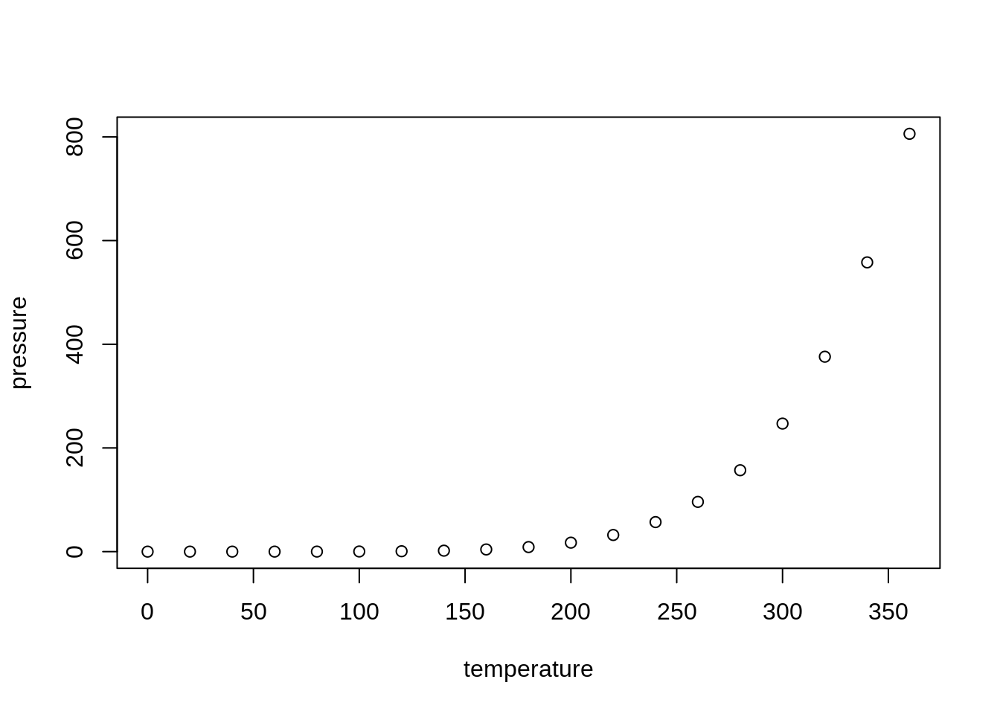

This is an R Markdown document. Markdown is a simple formatting syntax for authoring HTML, PDF, and MS Word documents. For more details on using R Markdown see http://rmarkdown.rstudio.com.
You can embed an R code chunk like this:
summary(cars)
speed dist
Min. : 4.0 Min. : 2.00
1st Qu.:12.0 1st Qu.: 26.00
Median :15.0 Median : 36.00
Mean :15.4 Mean : 42.98
3rd Qu.:19.0 3rd Qu.: 56.00
Max. :25.0 Max. :120.00
2 Best Practices
Use a new line for every sentence. This helps with version control—individually changed sentences will be highlighted upon commits (easy to parse) rather than whole paragraphs (nightmare to parse).
This formatting is incompatible with a double space after a period. Instead, use a single space after a period. To replace all double spaces with single spaces, do a find and replace for ". " → ". " Be careful not to blanket remove all double spaces because tabbed bullets have 3 spaces.
When making numbered (ordered) lists, just use 1. for all numbers. Markdown will make them sequential automatically. This is helpful if you go back and add additional entries later.
3 Software
You can create/edit R Markdown (.Rmd) files with the following free software:
If you use Visual Studio Code to create/edit .Rmd documents, you can view the source code side-by-side with the markdown Preview (after selecting the code type as markdown):
3.2 RStudio
When you click the Knit button in RStudio, a document will be generated that includes both content as well as the output of any embedded R code chunks within the document.
Add a new chunk by clicking the Insert Chunk button on the toolbar or by pressing Ctrl+Alt+I.
When you save the notebook, an HTML file containing the code and output will be saved alongside it (click the Preview button or press Ctrl+Shift+K to preview the HTML file).
The preview shows you a rendered HTML copy of the contents of the editor. Consequently, unlike Knit, Preview does not run any R code chunks. Instead, the output of the chunk when it was last run in the editor is displayed.
4 Including Plots
You can embed plots, for example:

Note that the echo = FALSE parameter was added to the code chunk to prevent printing of the R code that generated the plot.
5 Headings
5.1 Subheading
5.1.1 Subsubheading
5.1.1.1 Subsubsubheading
6 Lists
To add another element in a list while preserving the continuity of the list, indent the element four spaces or one tab.
6.1 Unordered Lists
To create an unordered list, add dashes (-), asterisks (*), or plus signs (+) in front of line items.
one item
one item
one item
one more item
one more item
one more item
lower level
sub-item 1
sub-item 2
6.2 Ordered Lists
the first item
test
test
new test
new test
the second item
test
test
the third item
one unordered item
subitem
one unordered item
fourth item
test
test
test
7 Blockquotes
Dorothy followed her through many of the beautiful rooms in her castle.
Continued…
8 Comments
Here's a paragraph that will be visible.
[This is a comment that will be hidden.]: #
9 Emphasis
This text is bolded text. This text is italicized text. This text is bolded and italicized text. This text is highlighted text. This text is highlighted text in a different color. This text is unicode text. This text is code in italics; this text is code is bold. This text is strikethrough text. This text will be underlined. This text is red!
10 Formatting
This text is centered.
11 Code/Syntax Highlighting
To use syntax highlighting to display code without running the code:
summary(cars)
or
summary(cars)
or
summary(cars)
12 Math Formulas
Inline:
This is the formula: \(x = y + 5\). Solve for \(x\).
Every new line should be prefixed with 2 spaces.
This allows you to have a footnote with multiple lines.↩︎
Named footnotes will still render with numbers instead of the text but allow easier identification and linking.
This footnote also has been made with a different syntax using 4 spaces for new lines.↩︎

8 Comments